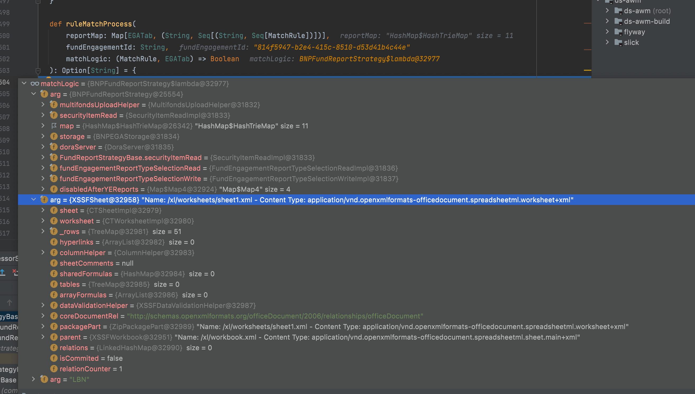

Most awful code when use OO
code
- Controller
-
maybeFund .map(fund => { val fundStrategy: Option[FundReportStrategy] = { fundReportStrategyFactory.getFundReportStrategy(fund.fundAdmin) } fundStrategy match { case Some(strategy) => strategy .processFundReport(request, disabledAfterYEReports)(fundEngagement, fund) case None => { val processResult: Result = FundAdminName.withNameWithDefault(fund.fundAdmin) match { case HSBC_IMS => { processIMSFiles(request, fundEngagement, fund, disabledAfterYEReports) } - FundReportStrategyFactory
-
package com.pwc.ds.awm.strategy.fundadmin trait FundReportStrategyFactory { def getFundReportStrategy(name: String): Option[FundReportStrategy] } - FundReportStrategy
-
import java.io.File import scala.collection.Map class FundReportStrategyBase @Inject() ( doraServer: DoraServer, securityItemRead: SecurityItemRead, fundEngagementReportTypeSelectionRead: FundEngagementReportTypeSelectionRead, fundEngagementReportTypeSelectionWrite: FundEngagementReportTypeSelectionWrite ) extends FundReportStrategy { var disabledAfterYEReports: Map[String, Boolean] = Map[String, Boolean]() override def processFundReport( request: Request[MultipartFormData[Files.TemporaryFile]], disabledAfterYEReports: Map[String, Boolean] )(implicit fundEngagement: FundEngagementData, fund: Fund): Result = { implicit val userEmail: String = request.session.get("email").getOrElse("") this.disabledAfterYEReports = disabledAfterYEReports request.body .file("file") .map(file => { FileType.withNameOpt(file.contentType.getOrElse("")) match { case Some(contentType) => var fileContentType = contentType // This below handle some cases where uploading csv from window gives excel contentType due to the Window registry settings. if ( (fileContentType == FileType.XLS || fileContentType == FileType.XLSX) && FilenameUtils .getExtension(file.filename) .toLowerCase == "csv" ) { fileContentType = FileType.TextCSV } processFile(file.ref.toFile, file.filename, fileContentType, disabledAfterYEReports) //No 3. case None => encapErrorResponse( UnprocessableEntity, ExtractionErrorCode.UNSUPPORTED_REPORT_TYPE_FILE_EXTENSION ) } }) .getOrElse( encapErrorResponse( UnprocessableEntity, ExtractionErrorCode.UNRECOGNISED_ERROR ) ) } def processFile( file: File, fileName: String, fileType: FileType, disabledAfterYEReports: Map[String, Boolean] )(implicit fundEngagement: FundEngagementData, fund: Fund, userEmail: String ): Result = encapErrorResponse( UnprocessableEntity, ExtractionErrorCode.UNRECOGNISED_ERROR ) def processExcelFile( filePath: String, contentType: String, disabledAfterYEReports: Map[String, Boolean] )(implicit fundEngagement: FundEngagementData, fund: Fund, userEmail: String ): Result = { val workbook = GeneralExcelExtractor .extract(filePath, contentType) .getOrElse( throw ExtractionTabError(None, ExtractionErrorCode.UNSUPPORTED_REPORT_TYPE_FILE_EXTENSION) // Why the UNSUPPORTED_REPORT_TYPE_FILE_EXTENSION throw?? ) val periodStart = date2UTCLocalDate(fund.auditPeriodBegin) val periodEnd = date2UTCLocalDate(fund.auditPeriodEnd) val sheetIterator = workbook.sheetIterator() var updatedTab = ListBuffer[String]() var successWithWarning = new ListBuffer[WarningTabStatus]() var errorList = new ListBuffer[ExtractionTabError]() while (sheetIterator.hasNext) { val sheet = sheetIterator.next() getTabProcessorExec(sheet, disabledAfterYEReports) match { case Success(value) => value match { case (tabs, warning) => if (tabs.nonEmpty) updatedTab ++= tabs if (warning.nonEmpty) successWithWarning ++= warning case _ => } case Failure(e) => e match { case fErr: ExtractionError => errorList += ExtractionTabError(None, fErr.errorCode) case eErr: ExtractionTabError => SafeLogger.logStringError( Logger, s"Extraction failed for fund engagement ${fundEngagement.id}", eErr ) errorList += eErr case eErr: Exception => SafeLogger.logStringError( Logger, s"Extraction failed for fund engagement ${fundEngagement.id}", eErr ) errorList += ExtractionTabError(None, ExtractionErrorCode.UNRECOGNISED_ERROR) } } } if (successWithWarning.nonEmpty || errorList.nonEmpty || updatedTab.nonEmpty) { encapExtractionResult( massageWarning(updatedTab, successWithWarning.toList), fund.name, periodStart, periodEnd, massageError(updatedTab, errorList.toList) ) } else { SafeLogger.logStringError( Logger, s"Extraction failed for fund engagement ${fundEngagement.id}", ExtractionException("No result & error") ) encapErrorResponse( UnprocessableEntity, ExtractionErrorCode.UNRECOGNISED_ERROR ) } } def getExcelReportProcessorClass( sheet: Sheet, fundName: String, fundEngagementId: String ): Option[String] = None def ruleMatchProcess( reportMap: Map[EGATab, (String, Seq[(String, Seq[MatchRule])])], fundEngagementId: String, matchLogic: (MatchRule, EGATab) => Boolean ): Option[String] = { val selectedTypeId = getSelectedReportTypeId(fundEngagementId) reportMap.foreach { case (reportType, config) => if ( Option(config._2).isDefined && Option(config._2).nonEmpty && selectedTypeId.contains( config._1 ) ) config._2.foreach(processor_rule => { if (processor_rule._2.exists(rule => matchLogic(rule, reportType))) return Some(processor_rule._1) }) } None } - BNPFundReportStrategy
-
import java.io.File import scala.collection.Map override def processFile( file: File, fileName: String, fileType: FileType, disabledAfterYEReports: Map[String, Boolean] )(implicit fundEngagement: FundEngagementData, fund: Fund, userEmail: String ): Result = { fileType match { case contentType if contentType == FileType.XLSX || contentType == FileType.XLS => processExcelFile(file.getPath, contentType.toString, disabledAfterYEReports) case _ => encapErrorResponse( UnprocessableEntity, ExtractionErrorCode.UNSUPPORTED_REPORT_TYPE_FILE_EXTENSION ) } } override def getExcelReportProcessorClass( sheet: Sheet, fundName: String, fundEngagementId: String ): Option[String] = { ruleMatchProcess( map, fundEngagementId, (rule: MatchRule, reportType: EGATab) => rule match { // check fund name and worksheet name case ExcelMatchRule(name, rnameCell, None, (-1, -1), None, _) => isReportNameMatch(name, sheet, rnameCell) // checks fund name but no checking on worksheet name case ExcelMatchRule(name, rnameCell, None, fundCell, None, _) => if (isReportNameMatch(name, sheet, rnameCell)) isFundNameMatch(fundName, sheet, fundCell, reportType) else false // check worksheet name but no checking on fund name case ExcelMatchRule(name, rnameCell, Some(sheetRegex), (-1, -1), None, _) => isReportNameMatch(name, sheet, rnameCell) && regexMatch(sheetRegex, sheet.getSheetName) // check both fund name and worksheet name case ExcelMatchRule(name, rnameCell, Some(sheetRegex), fundCell, None, _) => if ( isReportNameMatch(name, sheet, rnameCell) && regexMatch( sheetRegex, sheet.getSheetName ) ) isFundNameMatch(fundName, sheet, fundCell, reportType) else false // check table header & sheet name case ExcelMatchRule( _, (-1, -1), Some(sheetRegex), (-1, -1), Some(headerRowRule), headerRowRange ) => regexMatch(sheetRegex, sheet.getSheetName) && isHeaderRowMatch( sheet, headerRowRule, headerRowRange ) // check table header case ExcelMatchRule(_, (-1, -1), None, (-1, -1), Some(headerRowRule), headerRowRange) => isHeaderRowMatch(sheet, headerRowRule, headerRowRange) case _ => false } ) }
When encounter error, we want to debug issue goes to Controller
fundStrategy match {
case Some(strategy) =>
strategy
.processFundReport(request, disabledAfterYEReports)(fundEngagement, fund)
But the processFundReport is an interface
trait FundReportStrategyFactory {
def getFundReportStrategy(name: String): Option[FundReportStrategy]
}
Which means you can’t use IDE tool to goto the right code section, when you go with debug tool which will go to FundReportStrategy File
override def processFundReport(
request: Request[MultipartFormData[Files.TemporaryFile]],
disabledAfterYEReports: Map[String, Boolean]
)(implicit fundEngagement: FundEngagementData, fund: Fund): Result = {
implicit val userEmail: String = request.session.get("email").getOrElse("")
this.disabledAfterYEReports = disabledAfterYEReports
request.body
.file("file")
.map(file => {
FileType.withNameOpt(file.contentType.getOrElse("")) match {
case Some(contentType) =>
var fileContentType = contentType
// This below handle some cases where uploading csv from window gives excel contentType due to the Window registry settings.
if (
(fileContentType == FileType.XLS || fileContentType == FileType.XLSX) && FilenameUtils
.getExtension(file.filename)
.toLowerCase == "csv"
) {
fileContentType = FileType.TextCSV
}
processFile(file.ref.toFile, file.filename, fileContentType, disabledAfterYEReports) //No 3. Ok, we will go to here
OK, we trace “processFile”, but the function is still another interface:
def processFile(
file: File,
fileName: String,
fileType: FileType,
disabledAfterYEReports: Map[String, Boolean]
)(implicit
fundEngagement: FundEngagementData,
fund: Fund,
userEmail: String
): Result = encapErrorResponse(
UnprocessableEntity,
ExtractionErrorCode.UNRECOGNISED_ERROR
)
go with the same debugger, we will go to BNPFundReportStrategy file
override def processFile(
file: File,
fileName: String,
fileType: FileType,
disabledAfterYEReports: Map[String, Boolean]
)(implicit
fundEngagement: FundEngagementData,
fund: Fund,
userEmail: String
): Result = {
fileType match {
case contentType if contentType == FileType.XLSX || contentType == FileType.XLS =>
processExcelFile(file.getPath, contentType.toString, disabledAfterYEReports)
case _ =>
encapErrorResponse(
UnprocessableEntity,
ExtractionErrorCode.UNSUPPORTED_REPORT_TYPE_FILE_EXTENSION
)
}
}
And “processExcelFile” will lead you back to FundReportStrategy
def processExcelFile(
filePath: String,
contentType: String,
disabledAfterYEReports: Map[String, Boolean]
)(implicit
fundEngagement: FundEngagementData,
fund: Fund,
userEmail: String
): Result = {
val workbook = GeneralExcelExtractor
.extract(filePath, contentType)
.getOrElse(
throw ExtractionTabError(None, ExtractionErrorCode.UNSUPPORTED_REPORT_TYPE_FILE_EXTENSION) // Why the UNSUPPORTED_REPORT_TYPE_FILE_EXTENSION throw??
)
val periodStart = date2UTCLocalDate(fund.auditPeriodBegin)
val periodEnd = date2UTCLocalDate(fund.auditPeriodEnd)
val sheetIterator = workbook.sheetIterator()
var updatedTab = ListBuffer[String]()
var successWithWarning = new ListBuffer[WarningTabStatus]()
var errorList = new ListBuffer[ExtractionTabError]()
while (sheetIterator.hasNext) {
val sheet = sheetIterator.next()
getTabProcessorExec(sheet, disabledAfterYEReports) match {
case Success(value) =>
value match {
case (tabs, warning) =>
if (tabs.nonEmpty) updatedTab ++= tabs
if (warning.nonEmpty) successWithWarning ++= warning
case _ =>
}
case Failure(e) =>
e match {
case fErr: ExtractionError =>
errorList += ExtractionTabError(None, fErr.errorCode)
case eErr: ExtractionTabError =>
SafeLogger.logStringError(
Logger,
s"Extraction failed for fund engagement ${fundEngagement.id}",
eErr
)
Then “getTabProcessorExec” will leads you to the function getTabProcessorExec in same file:
def getTabProcessorExec(sheet: Sheet, disabledAfterYEReports: Map[String, Boolean])(implicit
fundEngagement: FundEngagementData,
fund: Fund,
userEmail: String
): Try[(Seq[String], Seq[WarningTabStatus])] = Try {
val processorClass =
getExcelReportProcessorClass(sheet, fund.name, fundEngagement.id).getOrElse(
throw ExtractionTabError(None, ExtractionErrorCode.UNSUPPORTED_REPORT_TYPE_FILE_EXTENSION)
)
The most interesting thing happens, when the getExcelReportProcessorClass get None, then throw wrong exceptions. HAHAHA~~~
getOrElse(
throw ExtractionTabError(None, ExtractionErrorCode.UNSUPPORTED_REPORT_TYPE_FILE_EXTENSION)
)
Ok, we ignore the issue and go to the implementation. Well, “getExcelReportProcessorClass” also an interface.
def getExcelReportProcessorClass(
sheet: Sheet,
fundName: String,
fundEngagementId: String
): Option[String] = None
The implementation of getExcelReportProcessorClass will goes to BNPFundReportStrategy file
override def getExcelReportProcessorClass(
sheet: Sheet,
fundName: String,
fundEngagementId: String
): Option[String] = {
ruleMatchProcess(
map,
fundEngagementId,
(rule: MatchRule, reportType: EGATab) =>
rule match {
// check fund name and worksheet name
case ExcelMatchRule(name, rnameCell, None, (-1, -1), None, _) =>
isReportNameMatch(name, sheet, rnameCell)
// checks fund name but no checking on worksheet name
case ExcelMatchRule(name, rnameCell, None, fundCell, None, _) =>
if (isReportNameMatch(name, sheet, rnameCell))
isFundNameMatch(fundName, sheet, fundCell, reportType)
else false
// check worksheet name but no checking on fund name
case ExcelMatchRule(name, rnameCell, Some(sheetRegex), (-1, -1), None, _) =>
isReportNameMatch(name, sheet, rnameCell) && regexMatch(sheetRegex, sheet.getSheetName)
// check both fund name and worksheet name
case ExcelMatchRule(name, rnameCell, Some(sheetRegex), fundCell, None, _) =>
if (
isReportNameMatch(name, sheet, rnameCell) && regexMatch(
sheetRegex,
sheet.getSheetName
)
)
isFundNameMatch(fundName, sheet, fundCell, reportType)
else false
// check table header & sheet name
case ExcelMatchRule(
_,
(-1, -1),
Some(sheetRegex),
(-1, -1),
Some(headerRowRule),
headerRowRange
) =>
regexMatch(sheetRegex, sheet.getSheetName) && isHeaderRowMatch(
sheet,
headerRowRule,
headerRowRange
)
// check table header
case ExcelMatchRule(_, (-1, -1), None, (-1, -1), Some(headerRowRule), headerRowRange) =>
isHeaderRowMatch(sheet, headerRowRule, headerRowRange)
case _ => false
}
)
}
Here is almost interesting things, for “ruleMatchProcess” we need to go back “FundReportStrategy” file
def ruleMatchProcess(
reportMap: Map[EGATab, (String, Seq[(String, Seq[MatchRule])])],
fundEngagementId: String,
matchLogic: (MatchRule, EGATab) => Boolean
): Option[String] = {
val selectedTypeId = getSelectedReportTypeId(fundEngagementId)
reportMap.foreach { case (reportType, config) =>
if (
Option(config._2).isDefined && Option(config._2).nonEmpty && selectedTypeId.contains(
config._1
)
)
config._2.foreach(processor_rule => {
if (processor_rule._2.exists(rule => matchLogic(rule, reportType)))
return Some(processor_rule._1)
})
}
None
}
The function has three parameters, that’s matchLogic is the function return by BNPFundReportStrategy.
(rule: MatchRule, reportType: EGATab) =>
rule match {
// check fund name and worksheet name
case ExcelMatchRule(name, rnameCell, None, (-1, -1), None, _) =>
isReportNameMatch(name, sheet, rnameCell)
// checks fund name but no checking on worksheet name
case ExcelMatchRule(name, rnameCell, None, fundCell, None, _) =>
if (isReportNameMatch(name, sheet, rnameCell))
isFundNameMatch(fundName, sheet, fundCell, reportType)
else false
// check worksheet name but no checking on fund name
case ExcelMatchRule(name, rnameCell, Some(sheetRegex), (-1, -1), None, _) =>
isReportNameMatch(name, sheet, rnameCell) && regexMatch(sheetRegex, sheet.getSheetName)
// check both fund name and worksheet name
case ExcelMatchRule(name, rnameCell, Some(sheetRegex), fundCell, None, _) =>
if (
isReportNameMatch(name, sheet, rnameCell) && regexMatch(
sheetRegex,
sheet.getSheetName
)
)
isFundNameMatch(fundName, sheet, fundCell, reportType)
else false
// check table header & sheet name
case ExcelMatchRule(
_,
(-1, -1),
Some(sheetRegex),
(-1, -1),
Some(headerRowRule),
headerRowRange
) =>
regexMatch(sheetRegex, sheet.getSheetName) && isHeaderRowMatch(
sheet,
headerRowRule,
headerRowRange
)
// check table header
case ExcelMatchRule(_, (-1, -1), None, (-1, -1), Some(headerRowRule), headerRowRange) =>
isHeaderRowMatch(sheet, headerRowRule, headerRowRange)
case _ => false
}
Well, with the shitty code logic, what’s matchLogic will be in the function ruleMatchProcess, I think nobody can find out without real time debugger.
Well, if you want to say you can use debugger to check the running time value, then you are beyond naive, the value in debugger is as below:

This is a perfect example of follow OO design and write code which can’t be debugged.
1. Use the interface, hardy trace the right implemetation
2. Use Factory mode, also no easy trace by another person who is not the code writer.
3. The logic jump from implementation and interface multiple times
4. The parameter configuration is by logic spaghetti.
And the logic depends on multi input format.